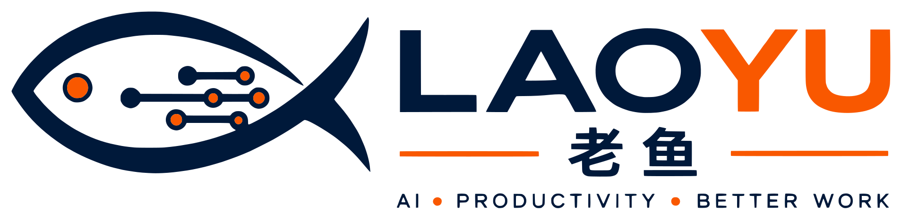

Making AI practical. Making work smarter.让 AI 更实用，让工作更高效。
LAOYUTALKS turns AI into practical tools and ideas for manufacturing leaders, supervisors and working professionals, so people can grow alongside AI.LAOYUTALKS 老鱼把 AI 变成制造业管理者、主管和职场人士用得上的工具与方法，让每个人在 AI 时代持续成长。
Think First. Improve Always. Build with AI.先思考，持续改进，用 AI 构建。
Think First先思考
Understand the problem before you pick a tool.先弄清问题，再选工具。
Improve Always持续改进
Small, steady improvements that last.小步改进，长期坚持。
Build with AI用 AI 构建
Turn ideas into working tools and workflows.把想法变成能用的工具和流程。
Knowing about AI and using it at work are two different things.了解 AI 和真正会用 AI，是两件不同的事。
Technology is changing how we work. But many professionals still face the same problems:科技正在改变我们的工作方式，但许多职场人士仍面对相同的挑战：
- Too many AI tools, and no idea where to startAI 工具越来越多，却不知道从哪里开始
- Repetitive tasks eating valuable working hours每天花大量时间处理重复性工作
- Knowing the concepts, but not how to apply them懂 AI 概念，却不知道如何用在工作中
- Few real-world use cases to learn from缺乏真实案例和实用指导
- Unsure how AI will change their career不确定 AI 会如何改变自己的职业
LAOYUTALKS was created to bridge this gap, built on real manufacturing experience. We don't just talk about AI. We explore how to make it work in real life.LAOYUTALKS 正是为了弥补这个差距而诞生，建立在真实的制造业经验之上。我们不只是谈论 AI，而是探索如何让 AI 真正发挥价值。
A world where everyone can work smarter with AI.打造一个人人都能善用 AI、高效工作的未来。
Empowering individuals and organisations to embrace AI, unlock their potential and build a more productive future.赋能个人与企业拥抱人工智能，释放潜力，共同创造更智能、更高效的未来。
Make AI practical, accessible and actionable.让 AI 更实用、更易懂、更容易落地。
Simplifying AI knowledge, sharing real-world applications and providing free tools that help people solve problems and work better.简化 AI 知识、分享真实应用案例、提供实用工具，帮助人们解决问题、提升效率。
- Practical实用 over theoretical胜于理论
- Application应用 over information胜于空谈
- Continuous learning持续学习 over perfection胜于追求完美
- Human empowerment赋能人 over tech dependency胜于依赖科技
- Real value创造价值 over AI hype胜于追逐潮流
Five steps, like stations on a production line.五个步骤，就像生产线上的五个工位。
- Learn学习
Understand AI in simple, plain language.用简单易懂的方式认识 AI。
Learn →学习 → - Apply应用
Turn knowledge into fixes for real workplace problems.把知识变成解决真实工作问题的行动。
Free tools →免费工具 → - Automate自动化
Cut repetitive work with smarter workflows.用更聪明的流程减少重复工作。
Automation Lab →自动化实验室 → - Improve改善
Keep improving processes, decisions and output.持续优化流程、决策和效率。
- Empower赋能
Build confidence and new skills to grow with AI.建立信心、培养新技能，与 AI 一起成长。
Four content series on TikTok and this site.TikTok 与本网站的四大内容系列。
AI × Daily WorkAI × 日常工作
Tools, prompts and workflows for everyday productivity.提升日常效率的工具、提示词和流程。
AI × ManufacturingAI × 制造业
AI in production, quality and operations.AI 在生产、质量与运营中的应用。
AI × ManagementAI × 管理
Decisions, planning, people and operational excellence.决策、规划、团队与卓越运营。
Workplace Productivity职场效率
Smarter workflows, digital tools and improvement.更聪明的流程、数字工具与改善。

LAOYU is an operations leader with 20 years of experience in manufacturing, testing AI on real workplace problems and sharing what works.老鱼是一位拥有 20 年制造业经验的运营管理者，用真实的工作问题测试 AI，并分享真正有效的方法。
Technology is powerful, but its real value comes from how we use it.科技的价值，不在于它有多先进，而在于我们如何运用它。
My years in manufacturing taught me that improvement doesn't always need more resources. Sometimes it just needs a smarter way to work.多年来在制造业的工作经验让我深刻体会到，改善不一定需要更多资源，有时候，只需要找到更聪明的工作方式。
As AI keeps evolving, I see a chance for all of us to rethink how we work, solve problems and create value.随着 AI 不断发展，我看到了一个新的机会：我们可以重新思考每天的工作方式，重新定义解决问题的方法，并通过科技创造更多价值。
LAOYUTALKS is my journey of learning, testing and sharing what works. I don't claim to know everything about AI. I believe in learning continuously and sharing what is genuinely useful.LAOYUTALKS 是我学习、探索、实践和分享的旅程。我不认为自己已经掌握了所有 AI 知识，我更相信持续学习、勇于尝试，并把真正有用的经验分享给更多人。
If something I share helps one person save time, solve a problem or find a new opportunity, LAOYUTALKS has done its job. Let's learn, build and grow together.如果我分享的内容，能够帮助一个人节省时间、解决问题，或者发现新的机会，那么 LAOYUTALKS 就已经创造了价值。让我们一起学习、实践、成长。
— LAOYU 老鱼